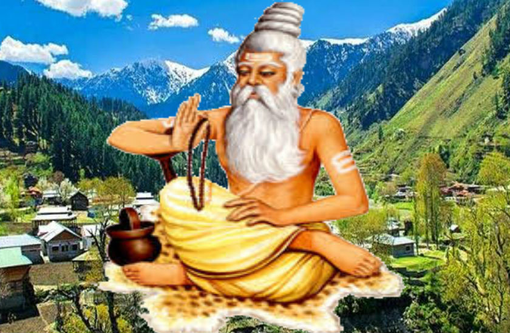
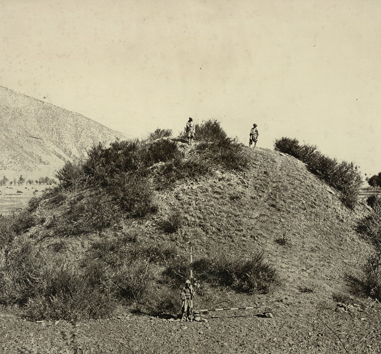
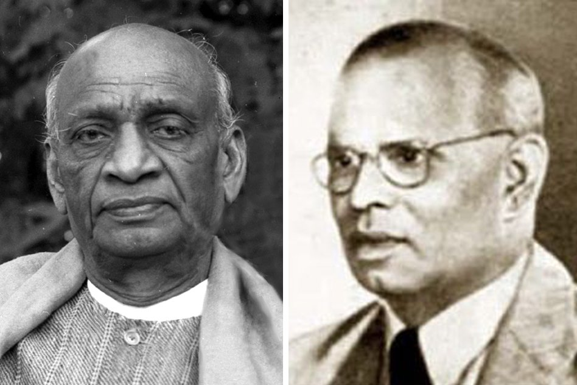
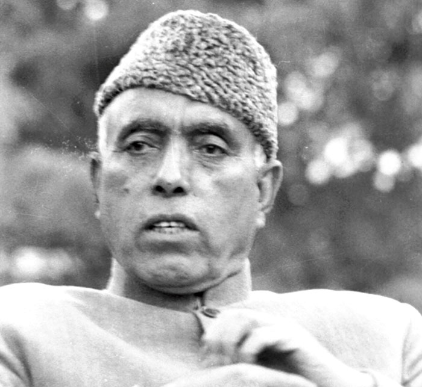
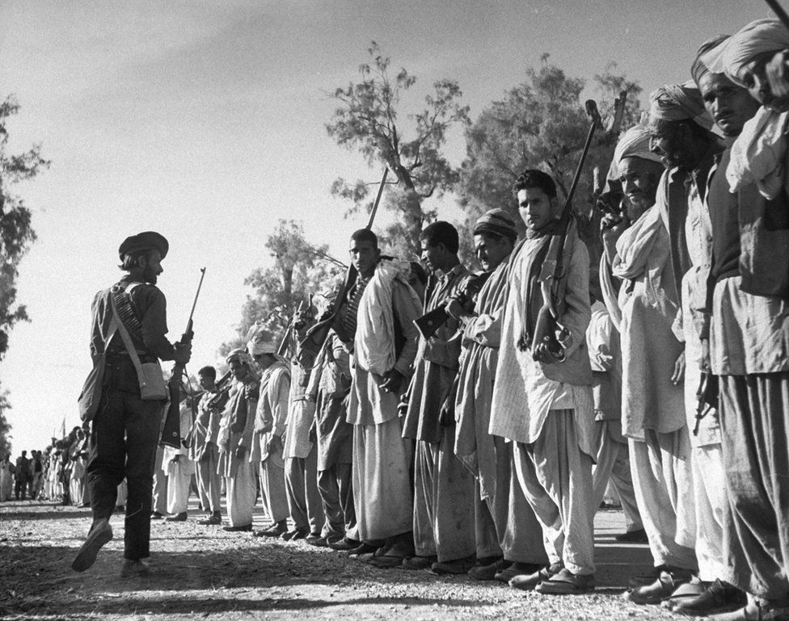
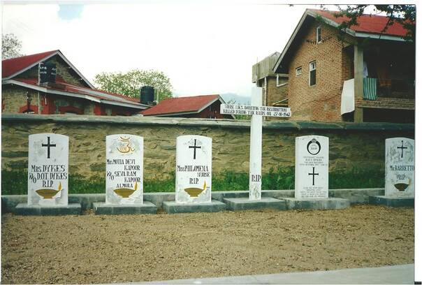
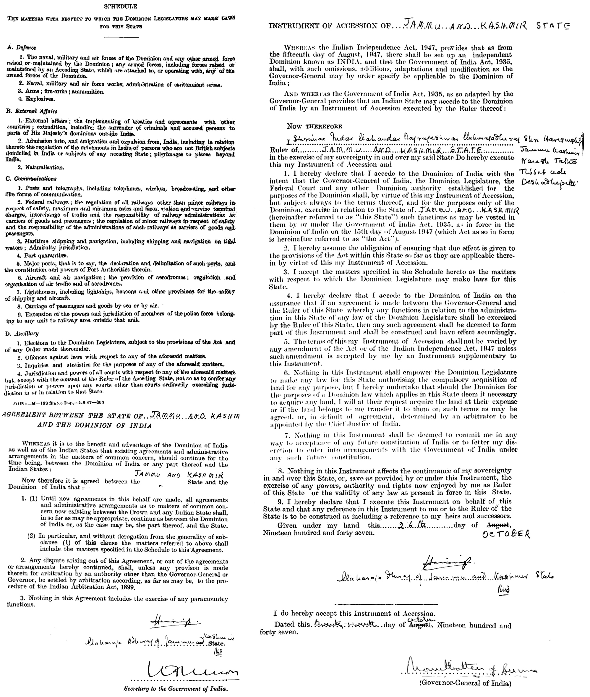
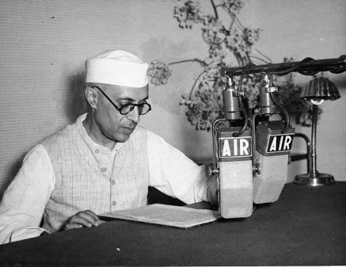
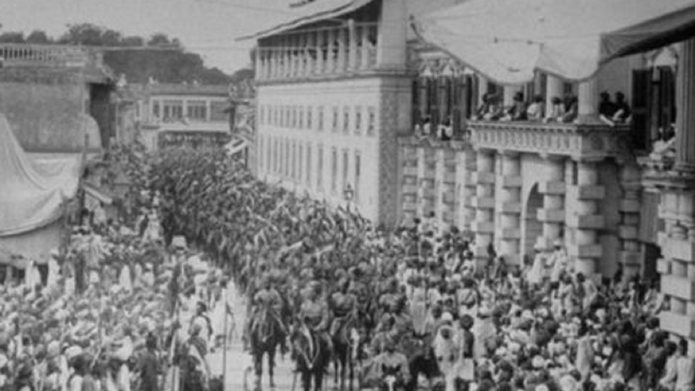
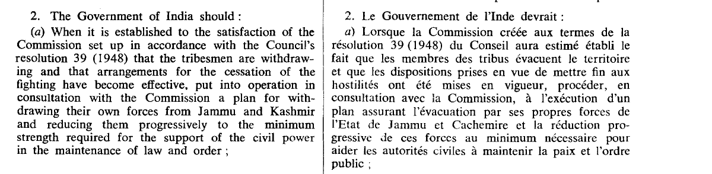

On the night of 26th October 1947, king Hari Singh handed his pistol to his A.D.C (personal secretary) and ordered him: "If the Indian Army doesn't reach Srinagar by tomorrow morning, make me sleep for the rest of my life."
Feels like scenes from a dramatized movie, right? Such has been the case with Kashmir for many years now. This blog is about Kashmir — which for centuries has been the center for art, culture, mathematics, science, language, spirituality, and of course politics. I will try to present each and every event with respect to Kashmir from its discovery to the abrogation of Article 370, along with proper facts, official documents from the UN, the Indian Constitution, and various letters and reports written at the time of these events. Since the story spans decades, this series is divided into multiple parts.
- I have tried to gather all the facts and sources myself. Though correct to my knowledge and research, I am open to other findings or mistakes I might have incurred unintentionally.
- These are my personal opinions and interpretations from various official sources. I don't want to blame any political party, personality, or religion. The Kashmir issue is about humanity, not religion.

The Discovery and History
The word Kashmir was derived from the Sanskrit word Kasmira. The Nilamata Puran describes the valley's origin from a lake called Sati-Saras or Parvati Lake. The legend has it that the lake was occupied by a demon named Jalodbhava. Lord Vishnu took the incarnation of a boar (Varaha) and struck the mountain at Varahmulla — present-day Baramulla — to let the water flow out. Geologists agree that the valley was formerly a lake, drained through the gap at Baramulla. Another legend mentions Kashmir as a place where Rishi Kashyap lived, the lake being called Kashyapa-mir. Greeks mentioned Kashmir as Kasperia; Chinese traveler Hieun Tsang visited Kashmir and called it Kia-shi-milo. The sixth Sikh Guru, Guru Hargobind, also visited Kashmir.
Rishi Kashyap — from whom Kashmir derives its name
Many dynasties ruled Kashmir, with important rulers like Lalitaditya of the Karkota Dynasty and Queen Kota Rani, who constructed canals to save Srinagar from floods. Old Srinagar city was discovered by the Mauryan Empire. Kashmir has many Hindu and Buddhist shrines including the Martand Sun Temple, Sharda-Peeth, Shankaracharya-Peeth, and the Stupa at Baramulla. Later, the Shah-Mir Dynasty was the first Muslim ruler in the state, followed by Mughals, Afghans, the Durrani Empire, and Sikhs under Raja Ranjit Singh. After the Anglo-Sikh war, rule passed to the British East India Company. Kashmir was considered a princely state. The last Monarch was Raja Hari Singh of the Dogra clan.

Martand Sun Temple
Stupa at Baramulla
At the Time of Independence
Louis Mountbatten, the last Viceroy and first Governor-General of India, sensed that Kashmir shared a border with both India and Pakistan and that both countries would want to control the state. He urged Raja Hari Singh to form an opinion and suggested merging with India. The talks didn't reach any endpoint. When Mountbatten returned the next day, the king made an excuse — his servant informed Mountbatten that he was suffering from a stomach ache. This was Hari Singh's common excuse when he didn't want to meet anyone. Little did he know that this "stomach ache" would become a headache for millions of people for decades to come.

Raja Hari Singh
At the time of Independence there were around 543 princely states in India. Getting all of them together was a very difficult task — made possible by two personalities: Sardar Vallabhai Patel and V.P. Menon (I.A.S officer). India was unlucky that Mahatma Gandhi died in 1948 and Sardar Patel in 1950.
Sardar Patel and V.P. Menon
One major figure was Sheikh Abdullah, who graduated from Aligarh Muslim University and went to Kashmir to find work. He was not allowed to take any important job — all positions were taken by Hindus at the time. Sheikh Abdullah was against monarchy and wanted democracy. Notably, he was also against the Muslim League and was not in favor of merging Kashmir with Pakistan at this point. He was a good friend of Jawaharlal Nehru, perhaps because they shared the same ideology. He was imprisoned by Raja Hari Singh for inciting the crowd against the King.
Sheikh Abdullah
Junagadh and the Plebiscite
Junagadh was a princely state ruled by Nawab Mahabat Khan — a ruler so fond of dogs that he organized marriages for them and declared a public holiday for the occasion. Ruling a majority Hindu population, he nonetheless signed the letter of accession to Pakistan on 15 September 1947. His state didn't even share a boundary with Pakistan. Citizens revolted. The king fled to Pakistan, accidentally leaving behind one of his queens and a child. His Dewan Shah Nawaz Bhutto (father of Zulfikar Ali Bhutto) asked India to take over. Sardar Patel and Nehru insisted on a plebiscite where citizens would decide. Citizens voted heavily in favor of India.

Newspapers celebrating the accession of Junagadh to India
This issue brought plebiscite into the picture — and a similar demand would later emerge for Kashmir. Meanwhile, the Hyderabad Nawab entered a standstill agreement with the Indian government for one year (November 1947 to November 1948) to decide his state's future.
Chain of Events in Kashmir
These are the most important and suspenseful series of actions that took place. For deeper reading, refer to:
- Kashmir Behind the Vale — M.J. Akbar
- Kashmir, 1947: Rival Versions of History — Prem Shankar Jha
- The Kashmir Dispute, 1947–2012 — A.G. Noorani
- India After Gandhi — Ram Chandar Guha
20/10/1947 — Pakistan Tribesmen Army
Jinnah ordered Akbar Khan, general of Pakistan, to start a military operation in Kashmir. The goal: remove Hari Singh, remove all non-Sunni Muslims, and merge Kashmir with Pakistan. Akbar Khan created a force of tribesmen from present-day Waziristan and Pakistan army personnel in civilian clothes. (This is not folklore — Pakistan acknowledged it at the UN.) Hari Singh's Brigadier Rajinder Singh took command and fought back. The tribesmen's army reached Muzaffarabad — now the capital of Pakistan-Occupied Kashmir. On seeing the situation worsen, Hari Singh asked V.P. Menon for help. Nehru, Patel, and Mountbatten deliberated. Mountbatten refused to send the Indian Army as Kashmir was not part of India — doing so would mean starting an international war, against the policy of the newly formed UN.
Pakistan's tribesmen army, 1947
Rajinder Singh destroyed the bridge at Uri, denying the tribesmen access to Srinagar and buying two critical days. Rajinder Singh died fighting that day. He and his men, along with local Sikhs, greatly outnumbered, held their ground.

Brigadier Rajinder Singh — awarded the Mahavir Chakra for his bravery
25/10/1947 — The Baramulla Massacre
The tribesmen's army reached Baramulla. As stated by Sheikh Abdullah at the UN on 5 February 1948: "The raiders came to our land, massacred thousands of people — mostly Sikhs, but Hindus and Muslims too — abducted thousands of girls, Hindus, Sikhs and Muslims alike, looted our property and almost reached the gates of our summer capital, Srinagar." According to reports, only one-third of Baramulla's population survived. Colonel Dykes and his wife at St. Joseph's Church and hospital were shot dead. A Muslim patient who had just given birth was shot, along with 9 nuns.
People killed at St. Joseph's Church School, Baramulla
Raja Hari Singh fled to Jammu with all his belongings. V.P. Menon and Mehr Chand Mahajan stayed to assess the situation, eventually escaping to Jammu in a broken jeep — the only vehicle available. Kashmir was still not part of India, so the Indian army could not come to the rescue.
26/10/1947 — Kashmir Accedes to India
V.P. Menon and Mehr Chand Mahajan insisted to Raja Hari Singh that the only way to save Kashmir was to sign the Instrument of Accession. The Raja agreed. V.P. Menon rushed to Delhi, obtained the letter, returned to Jammu for the King's signature, then rushed back to Delhi. That night, before going to sleep, the Raja handed his pistol to his A.D.C. with the words: "If the Indian Army doesn't reach Srinagar by tomorrow morning, make me sleep for the rest of my life."
The Instrument of Accession. Note that the letter had blanks — the same format was used for every princely state. Later amendments made Kashmir an integral part of India with the confidence of its own Constitutional Assembly.
27/10/1947 — Indian Army Lands in Kashmir
Srinagar was surrounded by the tribesmen's army. Amidst the fear of what had happened in Baramulla, Indian Army aircraft and helicopters landed in Srinagar. People welcomed them with great cheer. Sheikh Abdullah, released from prison on Nehru's advice, and his men provided crucial support to the Indian Army. The situation began shifting in India's favor.

Indian Army landed in Srinagar and was welcomed by the people
Jinnah ordered General Messervy to deploy Pakistan's army. But both India and Pakistan's armies were still commanded by British Commander-in-Chief Sir Claude Auchinleck. He denied permission — the UN had just been formed to prevent international war, and he refused to pit one part of Britain's army against another. Jinnah didn't accept the accession, with Junagadh's precedent in mind. Mountbatten himself had also suggested a plebiscite when signing the letter of accession.
2/11/1947 — Announcement of Plebiscite by Nehru
Jinnah asked Mountbatten and Nehru to meet in Lahore for a resolution. Patel opposed Nehru attending — Pakistan was the aggressor and Kashmir was now part of India. Nehru boycotted the meeting. Mountbatten met Jinnah in Lahore. Then, on 2nd November 1947, Nehru made an unilateral announcement on All India Radio — without consulting anyone — that once the situation stabilized, a plebiscite would take place. With this, the situation started slipping from India's hands.
Nehru at All India Radio
On 31/12/1947, Nehru took the issue to the United Nations under Chapter 6 — whose resolutions are non-binding. Whatever the UN suggests is not final and abiding upon the nations. We will examine the UN resolution in detail next.
Hyderabad and the Indian Police Action
Hyderabad's Nawab wanted to merge with Pakistan, which was geographically impossible — it was surrounded by India on all sides. The Nawab was supported by the Majlis-e-Ittehadul Muslimeen (MIM), a radical organization whose paramilitary wing, the Razakars, began mass-murdering those in support of India, mostly Hindus — similar to what happened in Baramulla. India couldn't act due to the standstill agreement. On 13/9/1948, India launched Operation Polo. Within 5 days, Hyderabad was annexed. The Sunderlal Committee, constituted by Nehru, reported that 2 lakh people had died at the hands of the Razakars and during the annexation. The Nawab complained to the UN. Nehru, wary of India being seen as an occupier on the global stage, sought a diplomatic route for Kashmir — a decision that would have lasting consequences.
Operation Polo in Hyderabad
UN Resolution 47
The UN issued Resolution 47, outlining a three-step process:
- Ceasefire — Both nations would respect the line of control as of 31/12/1948. India retained two-thirds of Kashmir; one-third went to Pakistan. This was temporary, subject to the steps below.
- Demilitarization — Pakistan, having acknowledged sending army personnel disguised as tribesmen, was ordered to withdraw all forces and tribesmen from Pakistan-Occupied Kashmir. Only then would India begin demilitarization, while retaining a minimal force for public order and citizen safety — since Kashmir had already acceded to India.
- Plebiscite — Once demilitarization was complete, a plebiscite would be conducted, as both nations had agreed.
India agreed. Pakistan did not. The plebiscite could never happen because Pakistan never fulfilled condition one. Many people blame India — often without understanding that Pakistan must first vacate Pakistan-Occupied Kashmir for the plebiscite to legally proceed.
The USA and Britain voted against India in this resolution — a consequence of Cold War politics, as India was more aligned with the Soviet Union.

UN Resolution 47: Pakistan is clearly required to remove its forces and tribesmen
UN Resolution 47: India is permitted to maintain a force to govern public order in the state

UN Resolution 47: Plebiscite may only happen after Pakistan removes its forces
Thoughts, Interpretations, and Way Ahead
Jawaharlal Nehru always had an idealistic approach — unaware of the shrewd tactics of world politics, yet very keen on protecting India's image as a world leader. I think the situations were such that Nehru considered his approach the best option. Newly emerged from colonial rule, using force to establish authority in a state felt the same as colonizing it. He believed that the people of Jammu and Ladakh always wanted to merge with India, and Kashmir under Sheikh Abdullah would also vote for India. Little did he know that Sheikh Abdullah would later start negotiating with Pakistan as well.
The USA at that moment voted against India as part of Cold War strategy. Their position rested on a contradiction — they blamed India for occupying Kashmir as a federation where states could leave, yet the USA itself went to civil war over seven states that tried to do exactly that. China annexed Tibet with sheer force and faced no international censure. Meanwhile, India added Hyderabad, Goa, the Andamans, Daman and Diu, and even Lakshadweep (reached half an hour before Pakistan) — all now integral parts of the nation.
Perhaps Sardar Patel's approach would have been better for Kashmir. But what about the people of Kashmir — they were promised a plebiscite. Even if one happened, a plebiscite that imposes the decision of one community over another based on a handful of votes is against the ideals of democracy. And the citizens of Kashmir themselves chose a Constitutional Assembly that clearly stated: Kashmir was, is, and always will be an integral part of India.

Lal Chowk, Srinagar
So what went wrong? How does Article 370 come into the picture? Why did Sheikh Abdullah start negotiating with Pakistan? What is the Shimla Accord? Why were wars fought in 1965, 1971, and 1999? Why did the genocide of Kashmiri Pandits take place? How did the abrogation of Article 370 change the dynamics, and why was it not done sooner? Answers to all these questions in Part 2.